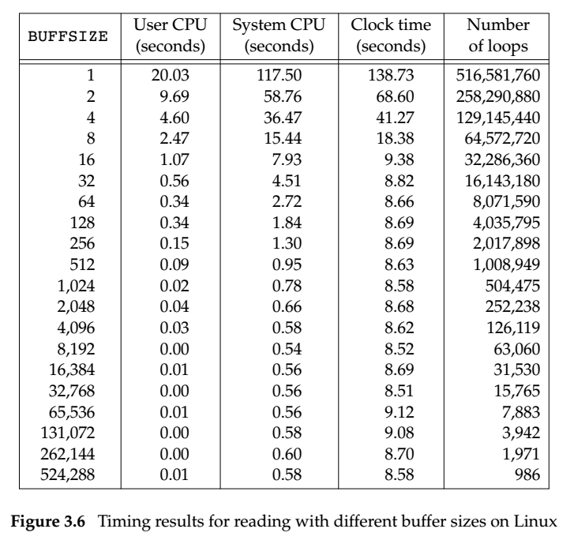
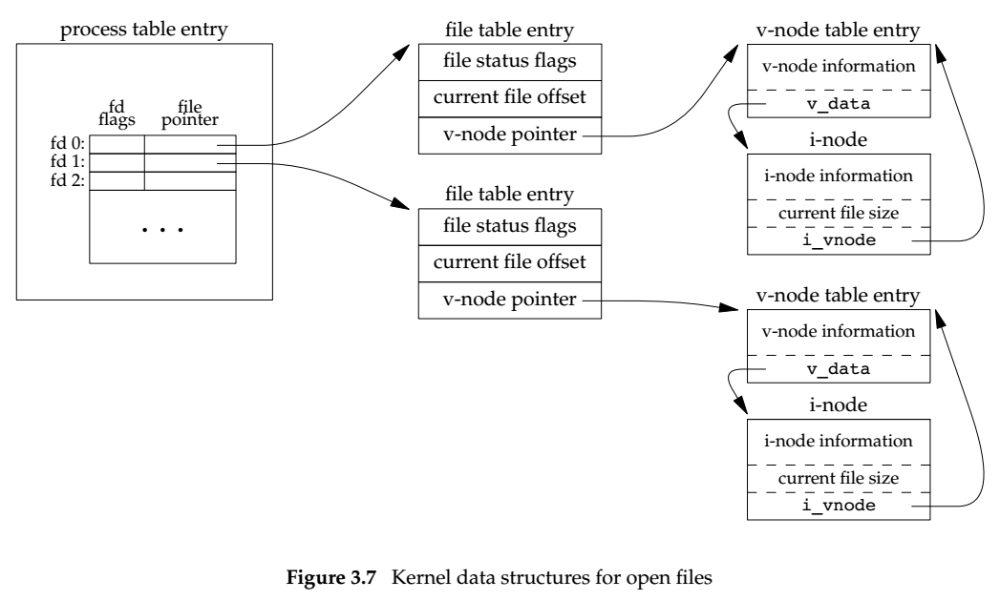
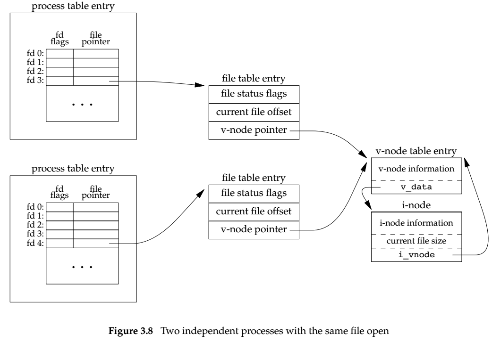
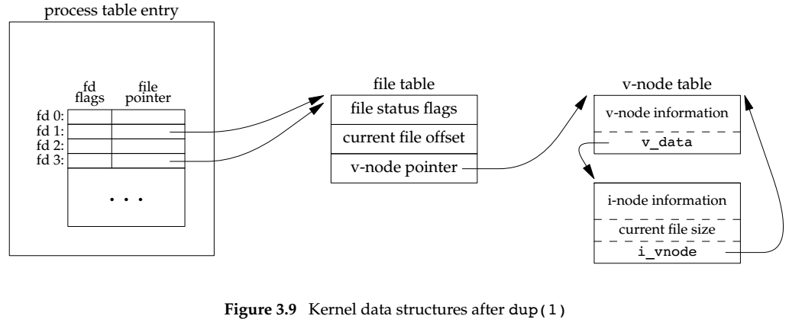

File I/O
3.1 Introduction
The term unbuffered means each read or write invokes a system call in the kernel.
The unbuffered I/O functions are not part of ISO C but are part of POSIX.1 and Single UNIX Specification.
3.2 File descriptors
File descriptor is a non-negative integer, it's returned if we open or create a file.
File descriptor 0 is with standard input of a process, 1 is output, and 2 is standard error.
Although they should be replaced by symbolic constants STDIN_FILENO, STDOUT_FILENO, and STDERR_FILENO to improve readability.
3.3 open and openat
The file descriptor returned by open and openat is guaranteed to be the lowest numbered unused descriptor.
The fd parameter distinguishes the openat from the open function.
The openat is to address two problems:
Allow different threads in same process to access different files from different locations.
Provides a way to avoid time-of-check-to-time-of-use errors (TOCTTOU).
3.6 lseek
lseek is to set an open file's offset.
the parameter whence can have three values: SEEK_SET, SEEK_CUR and SEEK_END.
The offset can be greater than the file's current size, where the next write to the file will extend the file. There is no need to allocate disk space for the data between the old end of the file and the location where you start writing.
3.9 I/O Efficienty

The file system used for this test was the Linux ext4 file system with 4096-byte blocks. This accounts for the minimum in the system time occurring at the few timing measurements starting around 4096. Increasing the buffer size beyond this limit has little positive effect.
Most file systems support read-ahead to improve performance.
3.10 File Sharing
Every process has an entry in the process table. Within that table entry is a table of open file descriptors. There are fd flags and pointer to a file table entry
The kernel maintains a file table for all open files, each file table entry contains: fd flag, current offset, and pointer to the v-node table entry for the file
Each open file has a v-node structure that contains information about the type of file and pointers to functions that operate on the file. They always contains the i-node for the file. The i-node contains the owner of the file, size, pointers to where the actual data blocks for the file are located on disk, and so on.
Note: Linux has no v-node, instead a generic i-node structure is used.


It's also possible for more than one file descriptor entry to point to the same file table entry. dup, fork.
3.11 Atomic Operations
If we call lseek and then write to achieve appending a message, it's possible two different processes conflict with each other. Thus we have O_APPEND to do it atomically.
pread is equivalent to calling lseek and then read, except that there is no way to interrupt the two operations, and the current file offset is not updated.
pwrite is equivalent to calling lseek and then write.
The term atomic operation refers to an operation that might be composed of multiple steps, either all the steps are performed or none are performed. It's not possible that only a subset of all to be performed.
3.12 dup and dup2 Functions
With dup2, we specify the value of the new descriptor.

3.13 sync, fsync and fdatasync Functions
UNIX systems have a buffer cache or page cache in the kernel. When we write data to a file, the data is normally copied by the kernel into the buffer and queued for writing to disk at some later time. This is called delayed write.
sync function simply queues all the modified block buffers for writing and returns, it does not wait for the disk writes to take place. It's called periodically to guarantee regular flushing of the kernel's buffer.
fsync refers only to a single file, and waits for the disk writes to complete before returning. This is used when an application, like database needs to be sure that the blocks have been written to the disk.
fdatasync is similar to fsync, but it affects only the data portion of a file, while fsync also update the file's attributes synchronously.
3.14 fcntl Function
The fcntl function is used for five different purposes:
Duplicate an existing descriptor (cmd = F_DUPFD or F_DUPFD_CLOEXEC)
Get/set file descriptor flags (cmd = F_GETFD or F_SETFD)
Get/set file status flags (cmd = F_GETFL or F_SETFL)
Get/set asynchronous I/O ownership (cmd = F_GETOWN or F_SETOWN)
Get/set record locks (cmd = F_GETLK, F_SETLK, or F_SETLKW)
F_DUPFD, F_GETFD, F_GETFL and F_GETOWN have special return values. The first command returns the new file descriptor, the next two return the corresponding flags, and the final command returns a positive process ID or a negative process group ID.
With fcntl, we can modify the file descriptor without opening that file, even if the file has been opened.